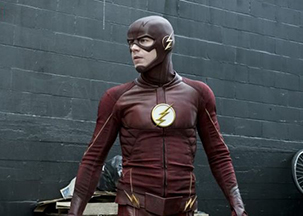
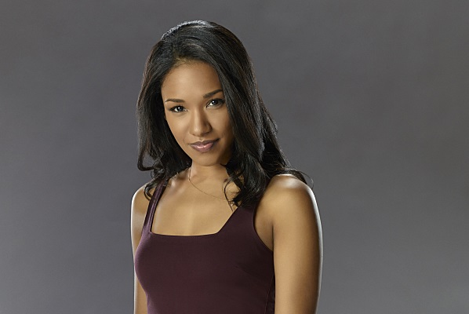
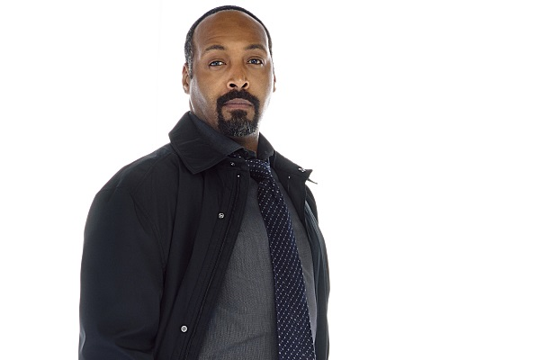
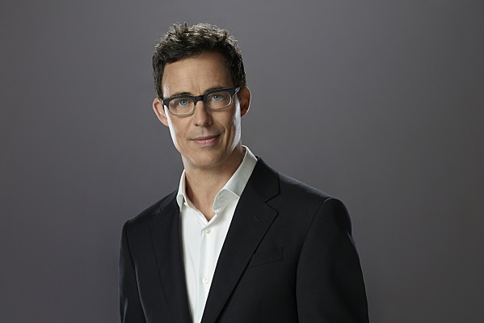
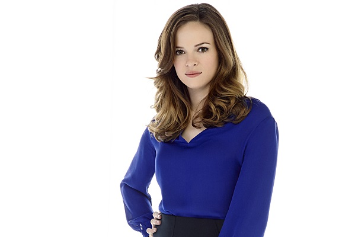
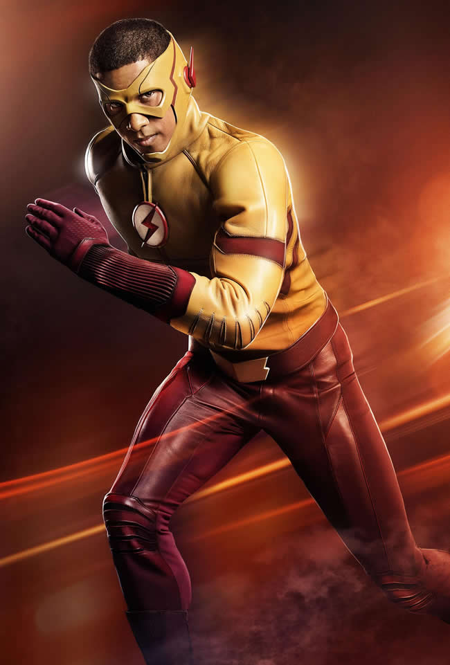

Bartholomew Henry "Barry" Allen is a scientist in the Criminal and Forensic Science Division of Central City Police Department. Barry is the son of the late Henry Allen and the late Nora Allen, the foster son of Joe West, and the fiance of Iris West.
The Flash

As the the Flash, he uses super speed to fight crime and stop super powered criminals. The Flash's powers come from his connection to the Speed Force, gained from being struck by dark matter lightning and exposed to various chemicals.
Iris West

Iris Ann West is a journalist working for the Central City Picture News, a former waitress at CC Jitters, and a psychology graduate student. Iris is also the daughter of Joe and the late Francine West, the older sister of Wally West and current fiance of Barry Allen.
Joe West

Detective Joseph "Joe" West is a police detective of the Central City Police Department. Joe is also the husband of the late Francine West, the father of Iris West and Wally West and the foster father of Barry Allen.
The Flash

Dr. Harrison "Harry" Wells is the founder of S.T.A.R. Labs on Earth Two and the father of Jesse Quick who was taken by the meta-human criminal known as "Zoom". Harry than traveled to Earth One, joining the team led by Barry Allen to take down Zoom. While he was eventually forced to work as a mole for Zoom, Harry eventually turned on the speedster criminal, and with the help of Barry Allen and Cisco Ramon, freed his daughter from captivity. He continued working with Team Flash as its main scientific mind to defeat Zoom, before eventually going back to Earth Two with his daughter and Jay Garrick, after Zoom was no more.
The Flash

Dr. Caitlin "Cait" Snow is a former scientist at Mercury Labs and a former bio-engineer at S.T.A.R. Labs. She was working during the particle accelerator disaster and tended to Barry Allen during his coma with Cisco Ramon until he woke up. After he began his crusade as "The Flash" Caitlin became a member of his team with Cisco and Dr. Harrison Wells, before discovering his true identity as Eobard Thawne, and provides medical support for the team. Caitlin is also the wife of the late Ronnie Raymond, and is close friends with Cisco, Barry and Felicity Smoak.
The Flash
Francisco "Cisco" Ramon[1], nicknamed Vibe by Barry Allen, is a mechanical engineering genius and a meta-human at S.T.A.R. Labs, also formerly serving as the prison guard to their makeshift prison. He came from a rather poor Puerto Rican family, and provides much-needed comic relief around his stiff workplace. Cisco is also the co-leader of Team Flash. He was also friends with Harrison Wells before learning his true identity as Eobard Thawne, though Eobard looked at Cisco as a surrogate son before and after his reveal. He also developed a rivalry with Hartley Rathaway and a friendly relationship with Ray Palmer. It was later revealed Cisco was also affected by the particle accelerator, causing him to become a meta-human with the ability to manipulate the vibrational energy of reality.
The Flash

Wallace "Wally" West is the son of Joe and the late Francine West, and the younger brother of Iris West. He was a champion drag-racer under the alias "Taillights". He gained his speed in the post-Flashpoint timeline, donning the name Kid Flash, which is also how he was nicknamed by his friends and some members of the media in the Flashpoint timeline. After defeating and detaining the criminal known as Plunder, he was embraced by Central City and officially became known as Kid Flash to all. He is the boyfriend of Jesse Quick who moved to Earth-3 and was briefly trapped in the Speed Force to replace Savitar. He was later rescued by Barry Allen.